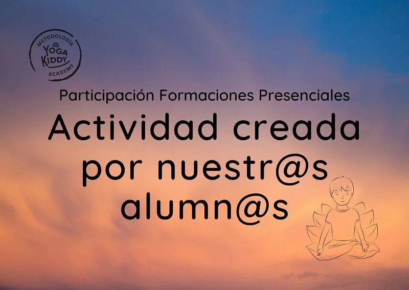

Los invitamos a que conozcan la actividad desarrollada por nuestra alumna Jessica en nuestra formación de yoga para niños en Viña del Mar, Chile 💜🙏
☆
Dentro de nuestra formación tenemos espacios donde damos lugar a que nuestras alumnas puedan crear espontáneamente actividades de yoga para niños y dejar volar su creatividad en todo su esplendor. 🧘♂️🧘♀️
☆
En esta actividad de yoga para niños, Jessica invita a sus alumnas a sacar toda su creatividad contando una historia en base a distintos animales y animándose a realizar posiciones de yoga con la forma de este animalito.
Hoy les traje de regalo una bolsa
A ver, a ver
¿La quieres tocar?
Es suave
Si es suave! No se si vendrán chocolates aquí adentro
Hoy vamos a trabajar en conjunto. Para eso necesito 5 voluntarias, 5 yog que me puedan acompañar
¿Quién quiere ser protagonista?
Vamos a armar un cuento y las chicas nos van a ir mostrando como este cuento lo vamos a hacer parte de todas
Vamos a cerrar los ojos un ratito y vamos a imaginar un paisaje lleno de verde y vamos caminando y de repente vamos a mirar al cielo y nos vamos a encontrar con una estrella yogi
Vamos a abrir los ojos y vamos a hacer una estrella de yoga
Marta cuéntanos que puede hacer esta estrella
Esta estrella viene viajando de muy lejos y esta muy cansada y quiere saltar para despertarse.
Esta estrella mira hacia abajo muy lejos en el pasto hay una tortuga
¿Cómo podemos hacer una postura de tortuga?
A esta tortuga le gusta caminar, pero es super lenta, es muy difícil ser tortura. Esta tortura se acerca a la orilla del agua y que ve? Un pez
Este pececito va a visitar a su amiga tortuga todos los días porque son mejores amigos.
Luego el pez se asoma desde el agua y se encuentra con su amiga mariposa.
La mariposa va a unir los pies y como vio que a su amigo pez le faltaba oxígeno, empezó a hacer olas en el mar y cuando se cansó se cayó al lado de una serpiente.
La serpiente tenía hambre y se comió la mariposa. Luego se acostó porque su pancita estaba muy llena.
Gracias a nuestras niñas yoggy por haber colaborado con los cuentos.
Descubre las fechas de nuestras próximas Formaciones de yoga para niños